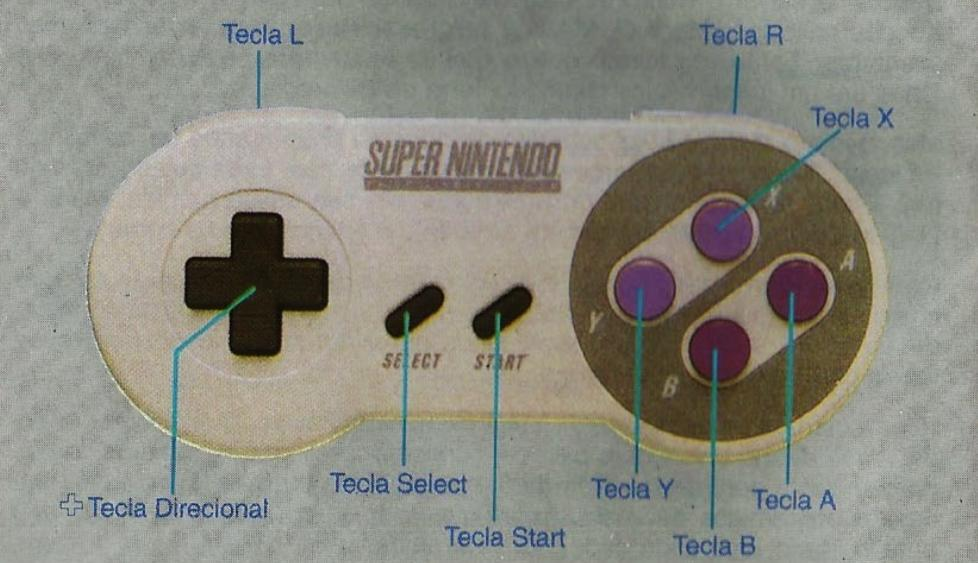

Operações do Controle
Controle Operacional
Você pode usar qualquer um dos controllers Super NES.
+Tecla Direcional
- Movimenta o Mario na tela do mapa.
- Depois de pressionar START na tela do mapa, você pode percorrer o mapa.
- Movimenta o cursor.
- Movimenta o Mario.
Tecla Start
- Inicia o jogo.
- Interrompe o jogo.
- Aparecem as opções na tela de seleção.
Tecla Select
- Muda as opções na tela de seleção.
- Derruba o item reserva da caixa localizada na parte superior da tela.
Tecla L Tecla R
- Quando você está numa cena de ação, as teclas L e R podem ser usadas para avançar ou voltar ligeiramente a uma cena. Você pode usá-las para ver mais adiante ou o que já passou, caso necessário. Essa função não funciona em todas as áreas.
Tecla A
- Faz o Mario saltar girando.
- Faz o Mario pular das costas do Yoshi.
Tecla B
- Faz o Mario saltar. (Mario e Yoshi saltam juntos quando o Mario está nas costas do Yoshi).
- Faz o Mario com Capa aterrisar devagar.
- Faz o Mario nadar.
- Aparecem as opções na tela de seleção.
- Faz o Yoshi voar quando é pressionada seguidamente, (Quando o Yoshi tem o poder de voar).
Teclas X e Y
- Faz o Mario acelerar.
- O Mario pode segurar alguns objetos quando essa tecla é mantida pressionada.
- Faz o Mario socar objetos do outro lado da cerca de arame enquanto estiver encostado nela.
- Depois que o Mario com Capa correr bastante e saltar, ele pode voar.
- Faz o Yoshi comer inimigos quando é pressionada, deixa ele cuspir os indesejáveis quando ela é solta.
- Faz você cancelar a seleção feita na tela.
- Faz o Mario atirar bolas de fogo.